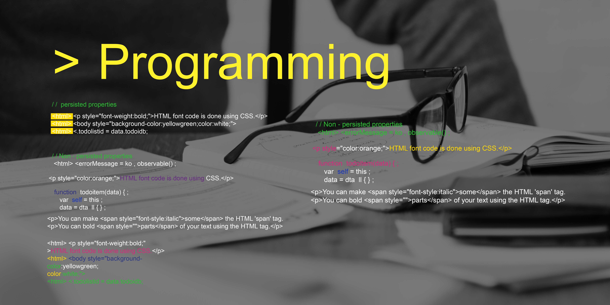

История этой молодой профессии началась в 1990 году. Именно тогда британский изобретатель Тим Бернерс-Ли разработал свой проект «Всемирная паутина». Тогда и был создан первый сайт. Конечно, поначалу труд веб-разработчика мало походил на его современную деятельность, ведь сайты «каменного века» состояли только из текста, а о красивом внешнем виде и продуманном функционале интернет-пользователи могли лишь мечтать. Веб-разработчики тех времен не работали с формой и фоном, мало экспериментировали с цветом.
Все изменилось, когда появился первый графический браузер Mosaic, который положил начало новой эпохе в работе этих специалистов.
С течением времени работа веб-разработчика становилась труднее, и это не удивительно: по мере развития интернета запросы аудитории менялись и усложнялись. Современному веб-разработчику нужно уметь реализовать любую безумную идею дизайнера и самую сложную схему функционала заказчика. Разработчики бывают разные! Одни отвечают за визуальную часть проекта. Программы, которые пишут такие разработчики, описывают всё, что мы видим на странице любого сайта или приложения – цвета, картинки, шрифты. Таких профессионалов называют frontend-разработчиками (фронтенд). Кликните правой кнопкой мыши прямо сейчас и выберите «Просмотреть код». Видите? Этот код и пишет frontend-разработчик. В этих символах содержится информация о цветовой гамме сайта, шрифтах, расположении графических элементов. Для нас с вами это непонятные символы, а для веб-разработчика – язык, с помощью которого он «общается» с компьютером. Но есть и другие разработчики – они занимаются наполнением сайта данными, а также поддержкой связи между этими данными. Это – специалисты backend (бэкенд). Backend-разработчики тоже пишут код. Например, когда мы хотим посмотреть в интернете мультфильм, мы не видим, как сайт осуществляет его поиск. Мы можем увидеть только результат. Но за процесс поиска тоже отвечает код, и создает его бэкенд-разработчик. Именно бэкенд-разработчики пишут код, благодаря которому сайты находят для нас нужную информацию. Но, разумеется, есть и такие специалисты, которые могут взять на себя обе части разработки: и бэкенд, и фронтенд, таким образом реализуя заказ, как говорится, под ключ.

С течением времени работа веб-разработчика становилась труднее, и это не удивительно: по мере развития интернета запросы аудитории менялись и усложнялись. Современному веб-разработчику нужно уметь реализовать любую безумную идею дизайнера и самую сложную схему функционала заказчика. Разработчики бывают разные! Одни отвечают за визуальную часть проекта. Программы, которые пишут такие разработчики, описывают всё, что мы видим на странице любого сайта или приложения – цвета, картинки, шрифты. Таких профессионалов называют frontend-разработчиками (фронтенд). Кликните правой кнопкой мыши прямо сейчас и выберите «Просмотреть код». Видите? Этот код и пишет frontend-разработчик. В этих символах содержится информация о цветовой гамме сайта, шрифтах, расположении графических элементов. Для нас с вами это непонятные символы, а для веб-разработчика – язык, с помощью которого он «общается» с компьютером. Но есть и другие разработчики – они занимаются наполнением сайта данными, а также поддержкой связи между этими данными. Это – специалисты backend (бэкенд). Backend-разработчики тоже пишут код. Например, когда мы хотим посмотреть в интернете мультфильм, мы не видим, как сайт осуществляет его поиск. Мы можем увидеть только результат. Но за процесс поиска тоже отвечает код, и создает его бэкенд-разработчик. Именно бэкенд-разработчики пишут код, благодаря которому сайты находят для нас нужную информацию. Но, разумеется, есть и такие специалисты, которые могут взять на себя обе части разработки: и бэкенд, и фронтенд, таким образом реализуя заказ, как говорится, под ключ.